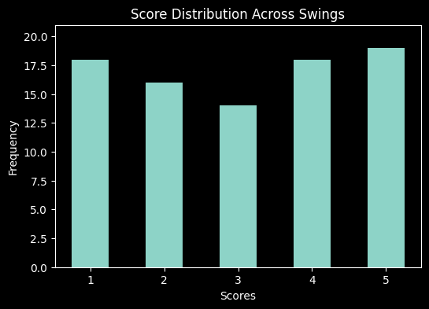
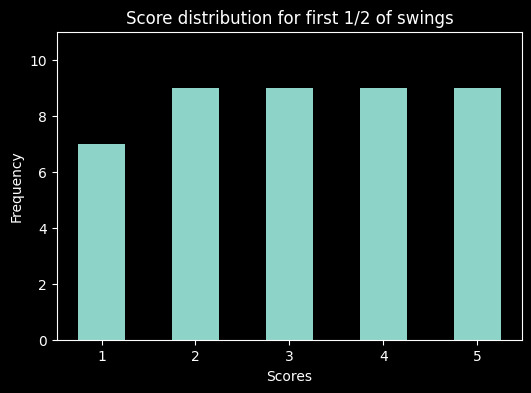
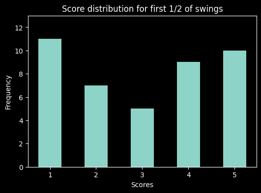

There are a total of 85 swings available from 13 full videos availableInitial Golf Swings
Lets look through our first set of swings provided
Here's a random selection of swings| origin_video | swing_index | score | og_vid_num | |
|---|---|---|---|---|
| 2 | IMG_0849 | 2 | 5 | 0849 |
| 17 | IMG_0848 | 1 | 5 | 0848 |
| 16 | IMG_0848 | 2 | 5 | 0848 |
| 50 | IMG_0860 | 2 | 5 | 0860 |
| 48 | IMG_0860 | 0 | 5 | 0860 |
Lets see the distribution of scores between all our swings and make sure things aren’t too badly skewed

The raw values per score are: {'5': 19, '4': 18, '1': 18, '2': 16, '3': 14}Looks like an acceptable distribution of scores to get started – normally would want to see the 3 score as the most sampled but this is ok
Was there a skew as the swings progressed?
Code
print(f'just to check that video {swing_df.og_vid_num.value_counts().sort_index().index[6]} is the midpoint of swings')
print(f'There are {swing_df.og_vid_num.value_counts().sort_index()[:6].values.sum()} swings before video 0855')
print(f'There are {swing_df.og_vid_num.value_counts().sort_index()[6:].values.sum()} swings from video 0855')just to check that video 0855 is the midpoint of swings
There are 43 swings before video 0855
There are 42 swings from video 0855
